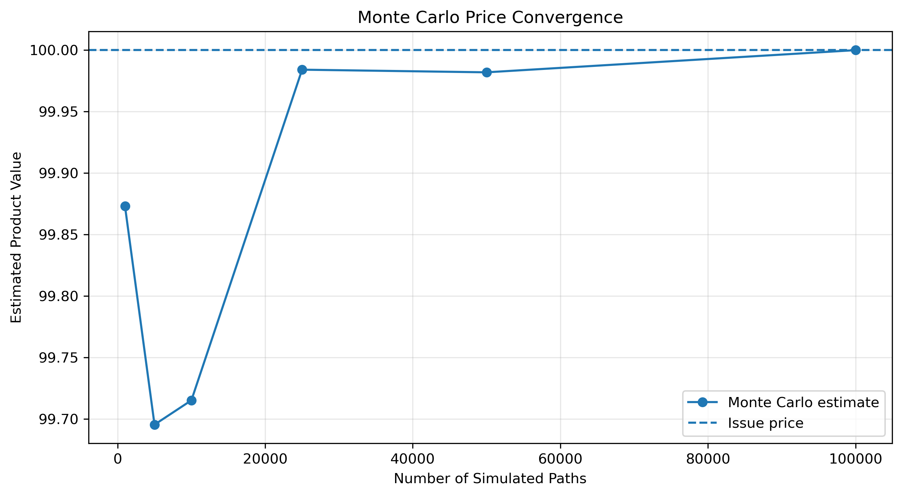
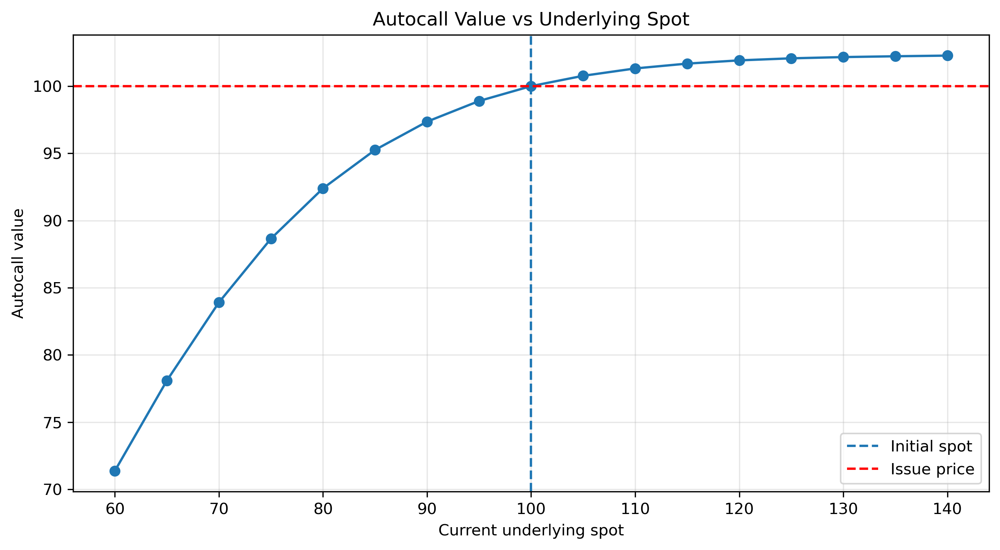
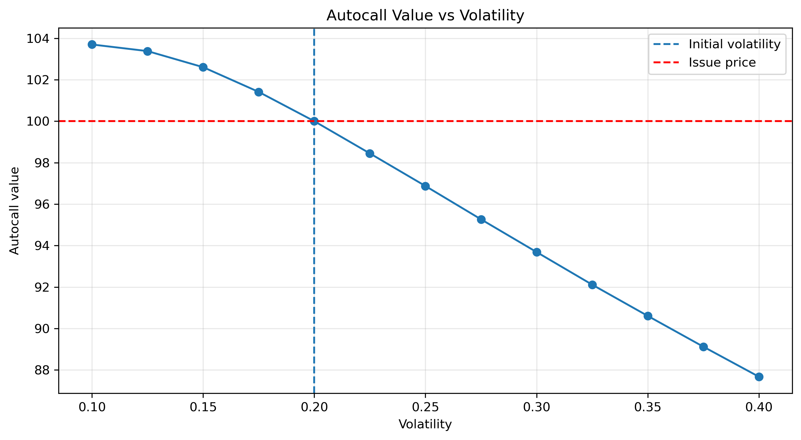
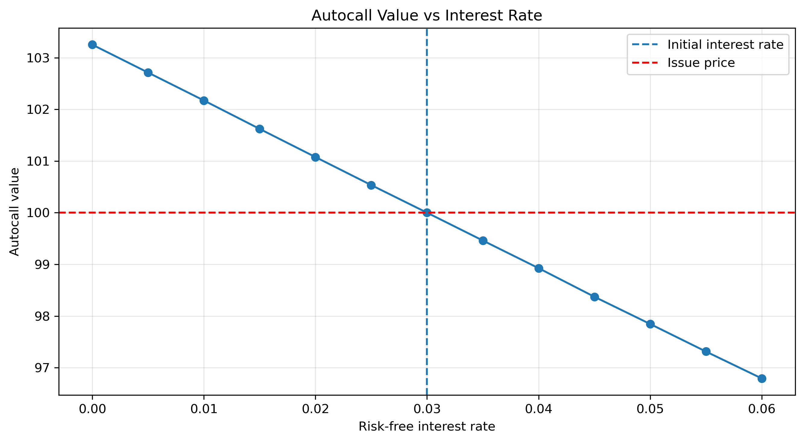
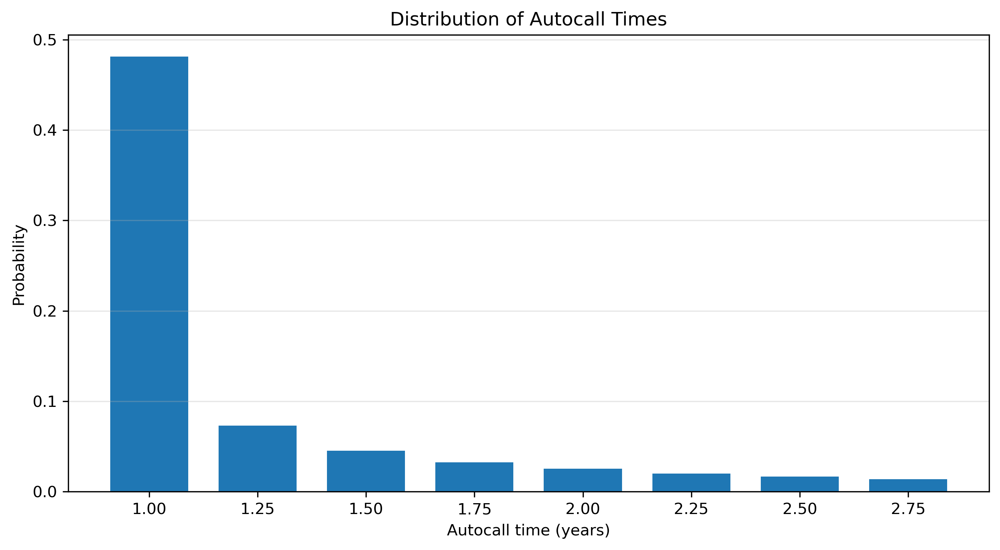

STRUCTURED PRODUCTS · DERIVATIVES · MONTE CARLO
Autocallable Note
Structuring & Pricing
Structuring, pricing and risk analysis of a single-underlying autocallable note with conditional memory coupons and downside protection using risk-neutral Monte Carlo simulation.
KEY RESULTS
01 · THE PRODUCT
Yield Enhancement
with Conditional Protection
The product is a single-underlying autocallable note combining conditional memory coupons, automatic early redemption and conditional downside protection.
The investor receives a coupon when the underlying is above the coupon barrier. If the condition is not satisfied, the missed coupon is accumulated through the memory feature and may be recovered at a later observation date.
In exchange for this income potential, the investor accepts limited upside through the autocall mechanism and remains exposed to significant downside if the underlying finishes below the protection barrier.
02 · PRODUCT STRUCTURE
3-Year Autocallable Note
03 · PAYOFF MECHANICS
Path-Dependent
Cash Flows
At each quarterly observation date, the underlying level determines whether the coupon is paid and whether the product is automatically redeemed.
If the underlying is above the 70% coupon barrier, the current coupon and any previously missed memory coupons are paid.
From the end of the one-year non-call period, the note is automatically redeemed when the underlying is at or above 100% of its initial level.
If the note survives until maturity and the final underlying level remains above the 60% protection barrier, the investor receives the full notional. Below the barrier, principal redemption follows the performance of the underlying.
04 · PRICING METHODOLOGY
Risk-Neutral
Monte Carlo Pricing
The underlying is modelled under the risk-neutral measure using a geometric Brownian motion with constant volatility, interest rate and dividend yield.
100,000 underlying paths are simulated at the contractual quarterly observation dates. The payoff rules are then applied independently to every simulated path.
The resulting cash flows are discounted to the valuation date and averaged to obtain the theoretical value of the note.
05 · FAIR COUPON CALIBRATION
Structuring the
Coupon
Rather than assuming an arbitrary coupon, the coupon is calibrated so that the theoretical value of the note equals its issue price.
The root is solved numerically using Brent's method while reusing the same simulated paths across coupon trials to reduce Monte Carlo noise.
Under the initial market assumptions, the resulting fair quarterly coupon is approximately 1.34%, corresponding to an indicative simple annualized coupon of approximately 5.37%.
06 · MONTE CARLO ACCURACY
Price Convergence

As the number of simulated paths increases, the Monte Carlo estimate progressively stabilizes around the calibrated issue price.
At 100,000 paths, the estimated Monte Carlo standard error is approximately 0.0405, corresponding to an approximate 95% confidence interval of [99.9205, 100.0795].
The full-sample value equals 100 by construction because the fair coupon is calibrated using the same Monte Carlo sample.
07 · SPOT RISK
Non-Linear Exposure to the Underlying

The note has positive exposure to the underlying around the initial market conditions, with a local Delta of approximately 0.1903.
The relationship is non-linear because upside participation becomes increasingly limited by the possibility of automatic early redemption.
Around the initial market conditions, the estimated Gamma is approximately -0.0217, reflecting the local concavity of the investor payoff profile.
08 · VOLATILITY RISK
The Investor is Locally Short Vega

Around the initial market conditions, increasing volatility reduces the theoretical value of the investor position.
The estimated Vega is approximately -0.6044 per one volatility point.
Higher volatility increases the dispersion of future outcomes, while the investor's upside is constrained by the autocall mechanism and significant downside remains possible below the protection barrier.
09 · INTEREST-RATE RISK
Interest-Rate Sensitivity

Under the model assumptions, the investor position has negative local interest-rate sensitivity.
The estimated Rho is approximately -0.0101 per basis point around the initial market conditions.
This sensitivity captures both the effect of rates on risk-neutral underlying dynamics and the discounting of future cash flows.
10 · EARLY REDEMPTION
Effective Maturity is Path-Dependent

Approximately 70.7% of simulated paths terminate before contractual maturity through the autocall mechanism.
The distribution is concentrated around the earliest eligible observation dates because paths satisfying the autocall condition leave the product immediately.
Approximately 29.3% of paths survive until the final three-year maturity.
These probabilities are generated under the risk-neutral pricing measure and should therefore be interpreted as model-implied probabilities rather than forecasts of real-world frequencies.
11 · DOWNSIDE RISK
Conditional Protection,
Not Guaranteed Protection
Approximately 7.16% of all simulated paths result in a principal loss at maturity.
Conditional on the product reaching maturity without being autocalled, the probability of principal loss increases to approximately 24.45%.
When a principal loss occurs, the average simulated reduction in principal redemption is approximately 48.58% of notional. This measure does not represent the investor's total economic P&L because coupons may have been received earlier in the life of the product.
The protection barrier therefore reduces the frequency of principal losses but does not eliminate downside exposure.
12 · TRADING & RISK MANAGEMENT
Managing the
Issuer Position
From a trading-desk perspective, the issuer is short the structured note sold to the investor and therefore initially carries approximately the opposite market exposures.
Around the initial market conditions, the investor is positive Delta and negative Gamma, Vega and Rho. Before hedging, the issuer therefore has approximately negative Delta and positive Gamma, Vega and Rho exposure.
These sensitivities are local and strongly state-dependent. They can change materially as the underlying approaches the coupon, autocall and downside protection barriers.
A real trading desk would therefore manage the position dynamically rather than treating the initial Greeks as constant exposures throughout the life of the note.
13 · MODEL LIMITATIONS
From Educational Model
to Production Pricing
The framework is intentionally simplified to focus on the main economic mechanisms of the autocallable note.
The underlying follows a geometric Brownian motion with constant volatility, while interest rates and the dividend yield are also assumed constant.
A production implementation could incorporate the market implied volatility surface, local or stochastic volatility, interest-rate and dividend curves, and more realistic underlying dynamics.
The framework also abstracts from issuer credit risk, funding costs, transaction costs, liquidity constraints and the discrete dynamic hedging process faced by the issuing desk.